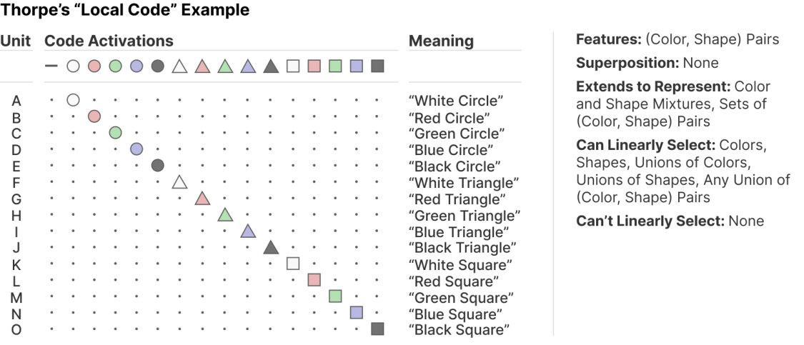
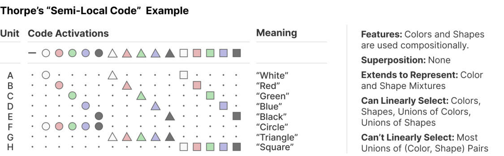
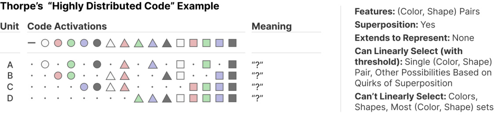
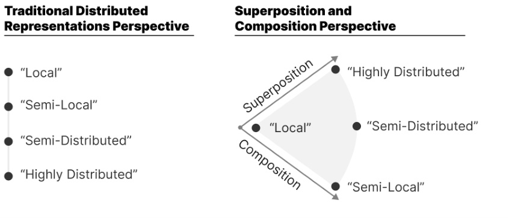
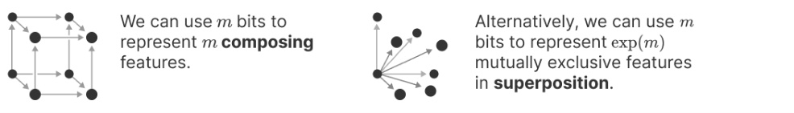
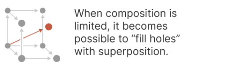
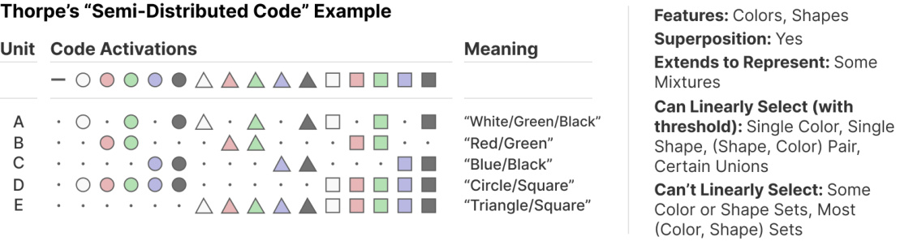
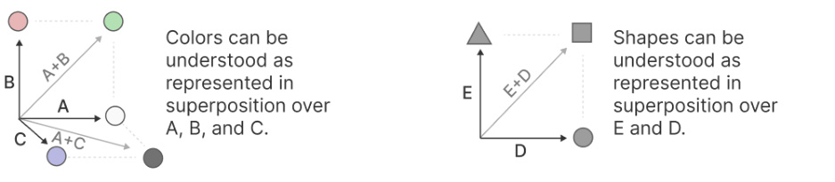

Distributed Representations: Composition & Superposition
An informal note on the relationship between superposition and distributed representations by Chris Olah. Published May 4th, 2023.
Distributed representations are a classic idea in both neuroscience and connectionist approaches to AI. We're often asked how our work on superposition relates to it. Since publishing our original paper on superposition, we've had more time to reflect on the relationship between the topics and discuss it with people, and wanted to expand on our earlier discussion in the related work section and share a few thoughts. (We care a lot about superposition and the structure of distributed representations because decomposing representations into independent components is necessary to escape the curse of dimensionality and understand neural networks.)
It seems to us that "distributed representations" might be understood as containing two different ideas, which we'll call "composition" and "superposition".1 These two different notions of distributed representations have very different properties in terms of generalization and what functions can be linearly computed from them. And while a representation can use both, there's a trade-off that puts them fundamentally in tension!2
To make this concrete, we'll consider a few potential ways neurons might represent shapes of different colors. These lovely examples are borrowed from Thorpe (1989), who created them to demonstrate various possibilities between the idea of a "local code" and a "distributed code" in neuroscience. Thorpe provides four example codes – "local", "semi-local", "semi-distributed", and "high-distributed". These might traditionally be seen as being on a spectrum between being "local" and "distributed". We'll consider these examples again and offer an alternative view in which the examples instead vary on two different dimensions of superposition and composition.
Following Thorpe, this note will focus on examples where neurons have binary activations. This significantly simplifies the space of possibilities, but it's still a rich enough space to have interesting questions.3
"Local" Codes
We'll start with what Thorpe calls a pure "local code". In this setup, there's a neuron for each (shape, color) pair. In our language, this model is "monosemantic" and doesn't have any superposition.

This example might seem silly and wasteful, but it is worth noting that this code actually has quite a few interesting properties! For example, it can be used to represent arbitrary sets of stimuli – for example, a red circle and a blue square. Alternatively, if another neural network layer is built on top of it, it's very interesting to ask what can be "linearly selected" from it, and this is also extremely flexible. A future neuron could use a linear function to do something like fire for black circles and white triangles, but not black triangles or white circles. This won't be possible with other codes!
This example is also an interesting example for thinking about the linear probes research methodology. In our toy example, it would be very reasonable to probe for the existence of a feature like "red", and in the above example, a linear probe would certainly be able to predict it! However, despite this, it doesn't seem like the above example should be understood as having a "red" feature.
"Semi-Local" / Compositional Codes
Another natural option is to represent independent features (eg. "Green", "Square") with neurons and use composition to represent objects. Thorpe calls this a "semi-local code" and others might call it a "sparse code".
We see it as using a different set of features – colors and shapes, rather than (color, shape) pairs – which can compose together to represent (color, shape) stimuli.

This representation is "distributed" in the sense that representing an object is distributed over independent features composing together. This is often what people mean when they talk about distributed representations in machine learning. A classic example is Mikolov (2013) who found – to great excitement of the community! – that word embeddings represent properties of words like "gender" or "plural" as different direction vectors in embedding space.
There are several advantages for neural networks using "compositional" distributed representations:
-
Number of Neurons: Compared to the "local code", this compositional code requires many fewer neurons! Feature composition allows n features (eg. green) to compose into potentially exp( n ) combinations (eg. (green,square) ).
-
Statistical Efficiency: Composition allows "non-local generalization" (data about green circles can improve green squares).4
-
Extensibility: The code extends to represent intermediate objects or uncertainty. Purple shape? Use a mixture of red and blue! Rounded square? Maybe add in some circle. It "accidentally generalizes" in some sense!
Compositional representations are also extremely favorable from an interpretability perspective – we can understand them in terms of individual components, despite the potentially exponential space of composition.
"Dense" / Maximal Superposition Codes
The previous code needed fewer neurons than the "local" code, but there's another kind of distributed representation that can represent all colored shapes with only 4 neurons (just as 4 bits can represent 16 numbers). Such codes are sometimes called "dense". In our framing, it's maximal superposition.

Dense codes like this have a very cool advantage: they can represent far more, totally unrelated objects than there are neurons. But note that there are also lots of costs to this. It isn't possible to generically select most colors or shapes with a linear probe, let alone sets. You also generally can't represent objects "between" these features (eg. "purple square with rounded corners").
It's also worth noting that there's been a subtle change in this code, besides the use of superposition. It switched back to using the (color,shape) combination features from the "local" code, rather than the independent color and shape features of the "semi-local" compositional code. This is because, as we'll see in the next section, maximal superposition is only possible if there isn't composition. Thus, this code needs to use a non-composing set of features.
Composition vs Superposition
It's tempting to see these codes as being on a continuous spectrum in terms of how "distributed" they are. The "local" code activated one neuron at a time and needed many neurons. The "semi-local" code activated two neurons at a time and needed fewer neurons. The "highly-distributed" code seems to just take this trend further – it sometimes activates four neurons at a time, and needs the fewest neurons.
But we see the "semi-local" code and the "highly-distributed" code as actually taking two totally different, orthogonal strategies of composition and superposition. (Thorpe also has a "semi-distributed" code which we see as using a mixture of both strategies; we'll discuss it shortly.)

In fact, there's a sense in which superposition and composition are fundamentally competing as strategies. If one has m bits to encode stimuli, we can think of there as being exp( m ) volume. Storing n features which arbitrarily compose together requires exp( n ) volume; so we can only store m fully composable features in m bits. But if there's no composition, one can instead store exp( m ) items in superposition, although a nonlinearity is required to retrieve them.

That is, composition and superposition are two different ways to allocate the exponential volume. (The Toy Models of Superposition paper might be seen as fundamentally exploring this trade-off, although it casts things in terms of an equivalent idea of feature sparsity rather than composition.)
If it's true that "distributed representations" actually consist of two different, competing strategies with very different properties, it seems important to distinguish them. For example, sometimes distributed representations are described as providing both the benefits of non-local generalization and representing more features than neurons, but these properties seem to actually trade-off because one is associated with composition and the other with superposition.
Mixing Composition and Superposition
Composition and superposition are competing strategies, but it turns out they aren't as completely incompatible as it might sound. It's often the case that these compositional representations will only use a small
number of features at a time, and many features are mutually exclusive. There's "limited composition" in some sense. That is to say, features are sparse, typically having a value of 0.
When features are dense (ie. combinations are common), networks can only represent one feature per neuron. But when features are sparse (combinations of many features are rare) superposition becomes possible.
One way you can think about this is that while n features can compose into exp( n ) combinations, if composition is limited, there will be "holes" or low-probability regions in the compositional space which can be used to store other features in superposition.5

Thorpe's final "semi-distributed" code might be seen as an example of this. It still represents things in terms of composing color and shape features, but puts the color features in mutual superposition, and the shapes in mutual superposition.

Although these units begin to have some meaning – they're polysemantic, but only respond to a few features – it seems more natural from our perspective to think of this code from the perspective of linear combinations of neurons (ie. directions) as corresponding to features. For example, A+B=Green and D+E=Square. This is what we mean by this code representing composable shape and color features in superposition.

Conclusion
It seems to us that there are two different things people call "distributed representations": superposition and composition. While it's possible to mix these, they're fundamentally in tension. Distinguishing them seems important because they have very different properties.
Understanding the structure of representations is important because they're fundamentally at the heart of efforts to reverse engineer and mechanistically understand neural networks. When neural network representations are distributed in the sense we call "composition", it is possible to understand them in terms of a linear number of independent features rather than an exponential amount of volume. This seems critical if we hope to truly understand neural networks.
About
This is an informal note written by Chris Olah and published on May 4, 2023.
Informal notes allow us to publish ideas that aren't as refined and developed as a full paper. Mistakes are very possible! We'd ask you to treat this note as more like some ideas a colleague is informally sharing with you, or a typical internet blog post, rather than a paper.
Acknowledgments
This article was greatly improved by the editing of Joshua Batson, and more generally by the insightful feedback of Adam Jermyn, Martin Wattenberg, Neel Nanda, Samuel Marks, Trenton Bricken, Thomas Henighan, Shan Carter, Adly Templeton, Thomas Conerly, Brian Chen, Tristan Hume, and Robert Lasenby.
The ideas in this essay were influenced by conversations with too many colleagues and other researchers to have any hope of enumerating, but to whom I'm indebted.
Footnotes
There's also a third, trivial sense in which something might be a distributed representation, which is just that – if we think of neural activations as forming a vector space – it's a rotated version of a representation we wouldn't regard as distributed. In the terminology of our previous work, the features don't align with the basis dimensions, perhaps because there isn't a "privileged basis". We'll ignore this trivial
type of distributed representations both because it doesn't change the fundamental geometry, and also because it can't be demonstrated only using binary neurons. [ ↩ ]
There's a peril, as there always is in cross-disciplinary research, that we've missed some important prior work articulating this distinction. We certainly don't have a comprehensive knowledge of work on neural coding or connectionism, and don't mean to make any claim of novelty. Our goal in writing this informal note is to contextualize our challenges with the phenomenon we call "superposition" in relation to work on distributed representations, and to show how it relates to feature composition. It seems very possible that it's been previously observed by researchers in these fields. If you are aware of such prior work, we'd be very indebted to you for references. [ ↩ ]
We will sometimes describe how ideas extend to versions with continuous activations; in these cases, our thinking is very influenced by the idea of a linear representation where features correspond to directions. [ ↩ ]
My own thinking on distributed representations was very influenced by conversations with Yoshua Bengio circa 2013, who I understood to emphasize the non-local generalization of distributed representations. This kind of generalization seems like it must be very important to the performance of neural networks! [ ↩ ]
This observation is essentially an informal, simplified restatement of one of the key results of compressed sensing, a field of mathematics studying when extremely sparse vectors can be recovered. In general, compressed sensing is very helpful for understanding when superposition might be possible. It suggests that actually, if composition is limited in the sense of only allowing a fixed number of features to co-activate, the amount of superposition can grow exponentially in the number of neurons. [ ↩ ]